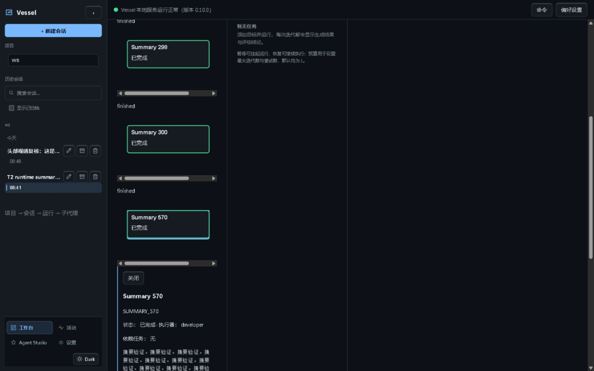
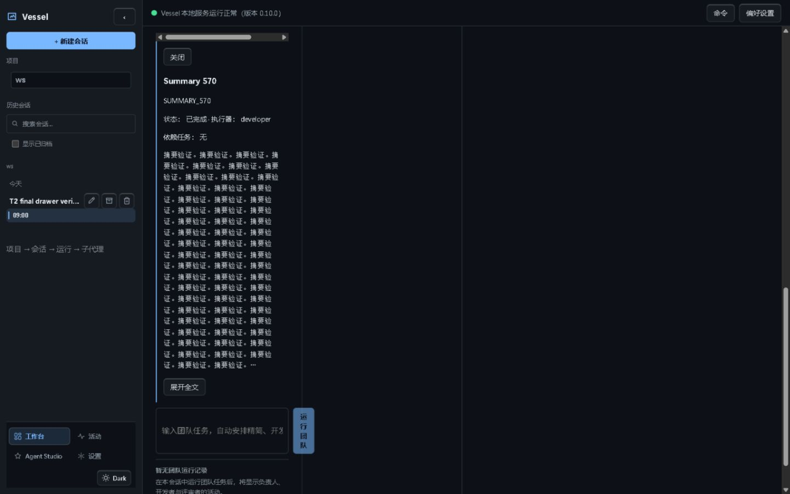

Visible IAB evidence
Report · Different runtime usage counts reflect the intervening Write turns.
960px header: stale dist and current-source build
Before: labels wrap vertically in the stale build.
After: each metric stays on one line; 18.59px high, no horizontal overflow.
Team drawer

Before: 300 characters, no ellipsis or expansion.

After: 300 characters plus ellipsis and Expand full output. DOM evidence proves the 570-character expanded text and one request.